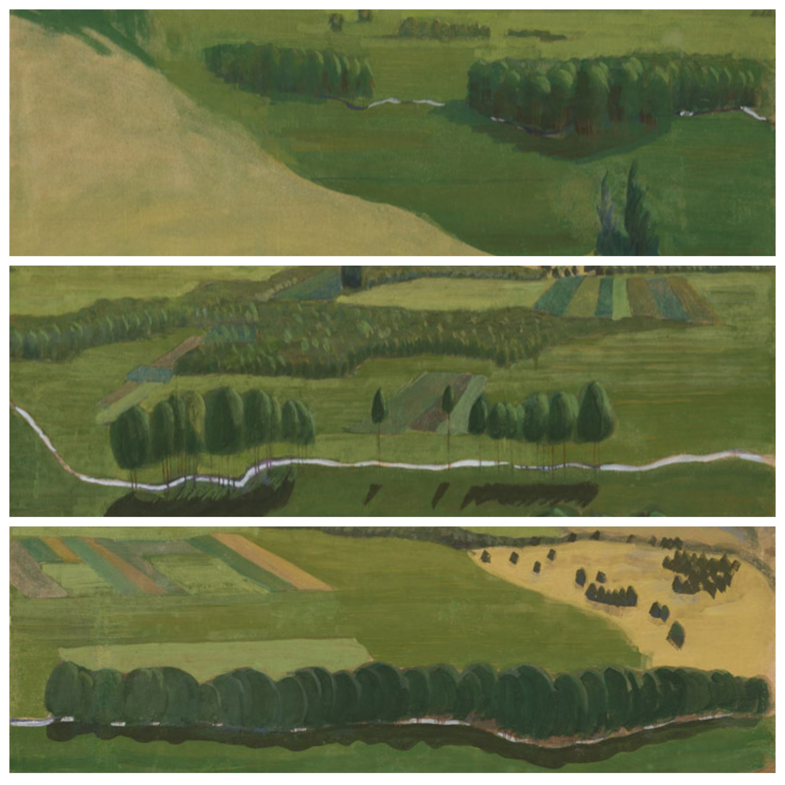
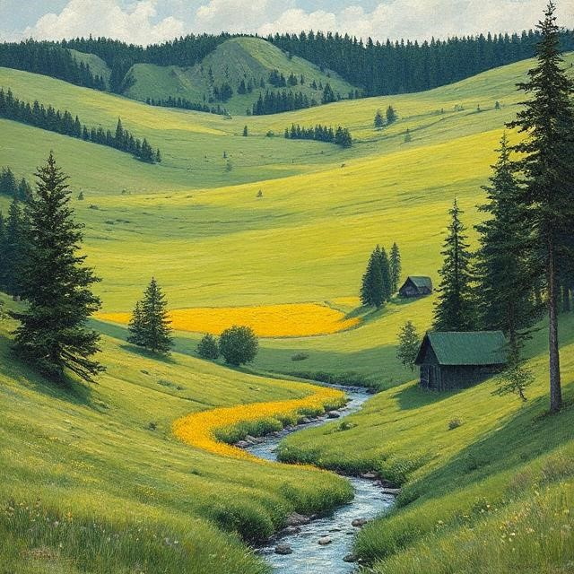

„Raigardas. Triptikas“

VIOLETA PALÈINSKAITË
RAIGARDAS
Tikiu, kad ðá vakarà galima gráþt á prasmegusá
miestà;
Po eglëm, po vandeniu kreivà galvytæ atkasti,
Per tamsþalæ trobà geltonà ruoþelá iðtiesti,
Atstumus nuo durø seniai uþrûdijusá sklàstá.
Tikiu, kad ðá vakarà gali paskendusios valtys
Su gráþt atgalios — á uþakusá mëlynà uostà,
Kad gali þvaigþdë sutirpinti naktigoniø ðaltá,
Suskilus drobinëj, margoj piemenaitës
prijuostëj.
Tikiu, kad ðá vakarà visos legendos — tikrovë,
Kad galima paukðèio ðirdy savo balsà iðgirsti,
To milþino slënio gauruotam ðeðëlyje stovint,
Taip viskà atminti, taip viskà pasauly
pamirðti…
Tikiu, kad uþ kaspino galima bûtø á orà
Ið properðos gylio iðtraukt nugarmëjusá bokðtà,
Kaip tolimà, kvailà, neiðsipildþiusi norà,—
Pro bëgantá vandená — vaikiðkai linksmà
pokðtà.
Promtas: Nuskendæs miestas milþiniðkoje gauruotoje
blyðkiai þalios spalvos Pievoje, daug egliø ir siauras kaip siûlas upelis, geltonos pievos nedidelis ruoþas ir tamsiai þalia trobelë.
Vertimas á anglø kalbà: A sunken city in a huge shaggy, pale green meadow, many fir trees and a stream as narrow as a thread, a small stretch of yellow meadow and a dark green hut.
